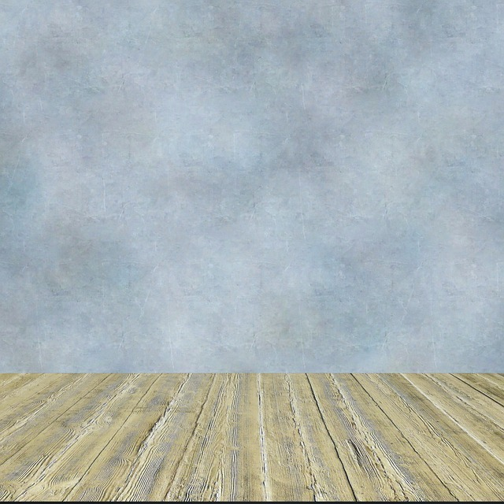

<!DOCTYPE html>
<html lang="en">
<head>
    <meta charset="UTF-8">
    <meta name="viewport" content="width=device-width, initial-scale=1.0">
    <link rel="stylesheet" href="WB.CSS">
    <title>Document</title>
</head>
<body>
    <!-- <div class="div">
    
    </div> -->
    <div class="container">
        <div class="washbasin"></div>
        <div class="top"></div>
        <!-- <div class="circle"> -->
            <!-- <div class="tea"></div> -->
        </div>
        <div class="handle"></div>
    </div> 


    <div class="wrapper">
        <div class="tap">
          <div class="base"></div>
          <div class="base-2"></div>
          <div class="tap-body">
            <div class="b1">
              <div class="child-b1"></div>
              <div class="key">
                <div class="square"></div>
              </div>
            </div>
          </div>
          <div class="aerator">
            <div class="water">
              <div class="drop"></div>
            </div>
          </div>
        </div>
        <div class="wrapper-puddle">
            <div class="puddle">
              <!-- <div class="p1">
                <div class="ponch"></div>
                <div class="circles" style="--i:1;"></div> -->
              </div>
            </div>
        </div>
      </div>
      <!-- <svg xmlns="http://www.w3.org/2000/svg" version="1.1">
        <defs>
          <filter id="liquid">
            <feGaussianBlur in="SourceGraphic" stdDeviation="5" result="blur" />
            <feColorMatrix in="blur" mode="matrix" values="0 0 0 0 0  0 1 0 0 0  0 0 1 0 0  0 0 0 10 -4" result="liquid" />
          </filter>
        </defs>
      </svg> -->
    <script src="WB.JS"></script>
</body>
</html>